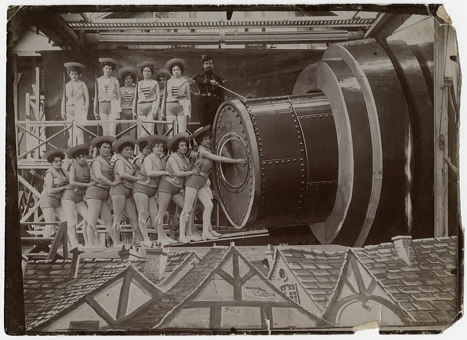

Рождение кино
1890-е – 1905

10 самых влиятельных фильмов эры
Единого официального списка нет. Этот список составлен по общим обзорам истории кино (источники — внизу главной страницы). Фильмы идут по году выпуска.
- Выход рабочих с фабрики Люмьер (Workers Leaving the Lumière Factory)
Луи Люмьер, 1895 - Политый поливальщик (L'Arroseur arrosé)
Луи Люмьер, 1895 - Прибытие поезда на вокзал Ла-Сьота (L'Arrivée d'un train en gare de La Ciotat)
Братья Люмьер, 1896 - Замок дьявола (Le Manoir du diable)
Жорж Мельес, 1896 - Золушка (Cendrillon)
Жорж Мельес, 1899 - Путешествие на Луну (Le Voyage dans la Lune)
Жорж Мельес, 1902 - Жизнь американского пожарного (Life of an American Fireman)
Эдвин Портер, 1903 - Большое ограбление поезда (The Great Train Robbery)
Эдвин Портер, 1903 - Путешествие сквозь невозможное (Voyage à travers l'impossible)
Жорж Мельес, 1904 - Спасённый Ровером (Rescued by Rover)
Льюин Фицхамон, 1905